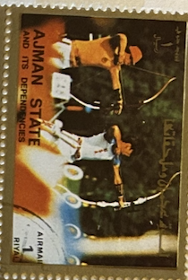
| SOURCE | TITLE| IMAGE MATCH | click to source page |
| Avion Thematics | Ajman 1972 Archery 1R From Munich Olympics Perf Set Of 16, Unmounted Mint , stamps on archery | 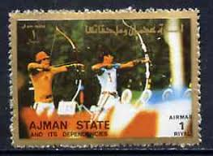 |
| TouchStamps | Stamp: Archery (Ajman 1973) - TouchStamps | 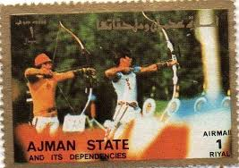 |
| Shutterstock | GIFFONI VALLE PIANA, ITALIA - 9 Foto de stock 2325023491 | Shutterstock | 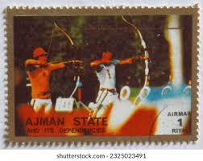 |
| Dreamstime.com | Cancelled Postage Stamp Printed by Ajman, that Shows Archery, Summer Olympics, Munich Editorial Stock Image - Image of games, 1972: 238462529 | 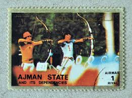 |
| lastdodo.fr | Tir à l'arc Catalogue de timbres - LastDodo | 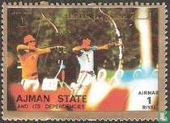 |
| Dreamstime.com | Itália 9 De Junho De 2023 : Carimbo Postal De Ajman. Foto Editorial - Imagem de passatempo, junho: 282605986 | 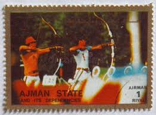 |
| Dreamstime.com | Sello Ajman foto de archivo editorial. Imagen de sello - 374574368 | 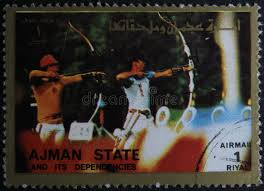 |
| eBay | 1972 Boy Scouts Calendar | eBay | 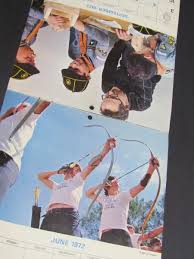 |
| eBay | RARE 1992/93 ICCOA JAY BARRS CARD #9C ~ US ARCHERY LEGEND ~ OLYMPICS ~ ATHLETES | eBay | 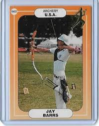 |
| Any outdoor archery ranges/clubs? : r/cincinnati | 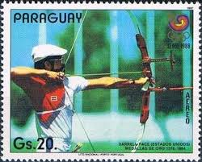 | |
| Archery Talk Forum | Why Are Archers Fat? | Archery Talk Forum | 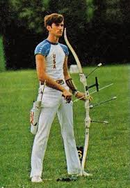 |
| Archery Talk Forum | Who is the best???? | Archery Talk Forum | 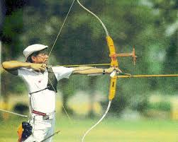 |
| StarTiger | Jay Barrs autograph collection entry at StarTiger | 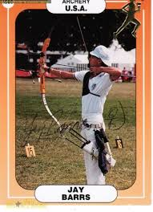 |
| piantaunalbero.com | Olympic Cards In Basketball Trading Cards 1983 Topps Greatest Olympians Trading Card #6 Dorothy Hamill NM-MT Olympic Sports Cards 1983 | 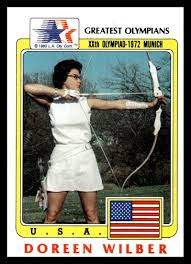 |
| Trading Card Database | Jay Barrs Cards | Trading Card Database | 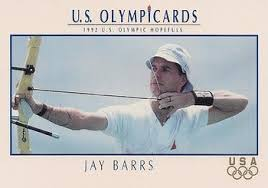 |
| Prabook | Prabook | 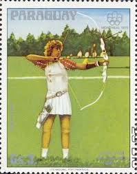 |
| X | This is John Williams, who won the @Olympics at Munich 1972 and became #archery's first men's champion of the new era. That was 50 years ago today. #Olympic50 | 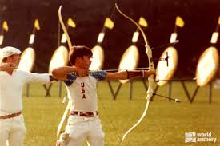 |
| SportsCardsPro | 1992 Impel U.S. Olympic Hopefuls Prix des Cartes | PSA & Prix non Classés | 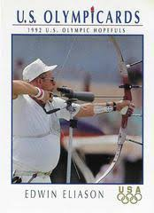 |
| World Archery | Archery's Olympic return in 1972 caused the sport to modernise | World Archery | 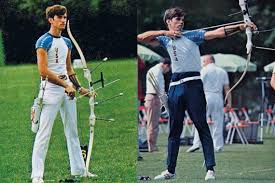 |
| American archer from Iowa wins gold medal | 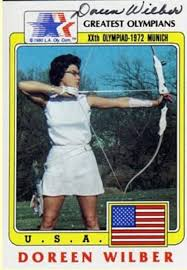 | |
| Archery Wire | Archery Celebrates 50 Years of Olympics Return | Archery Wire | 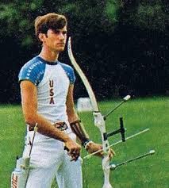 |
| Chairish | 1976 Montreal Olympic Poster, Double-Sided, Gymnastics\Archery - Cojo | Chairish | 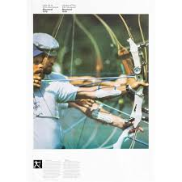 |
| X | 1989 :: Name of This India's No. 1 Archer ? | 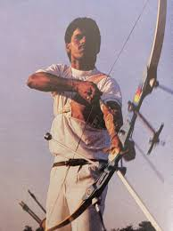 |
| Compagnia Arcieri Monica | CAM - COMPAGNIA ARCIERI MONICA - THE BESTS OF THE WORLD | 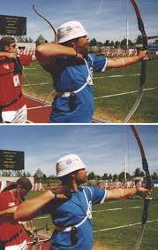 |
| 中華郵政全球資訊網 | The Postal Universal Website of R.O.C ─ Stamp House - Pages | 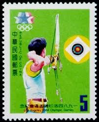 |
| Jaya Prada | 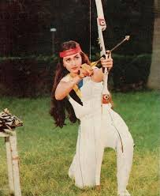 | |
| eBay | Buy 1992 Impel U.S. Olympicards - Greg Barton #28 online | eBay | 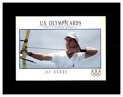 |
| RR Auction | Atlanta 1996 Summer Olympics Torch Carried by Gold Medalist Archer | 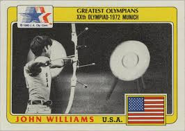 |
| WIAWIS | PRODUCTS CATALOG | 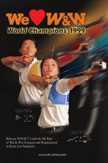 |
| Olympic Archery | 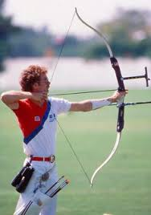 | |
| Archery Talk Forum | Wider back bar stabilizer mount (is it going to be the new thing) | Page 2 | Archery Talk Forum | 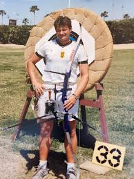 |
| HipPostcard | 203856 USSR archery Olympic champion LOSABERIDZE Moscow 1980 | Topics - Sports - Other, Postcard / HipPostcard | 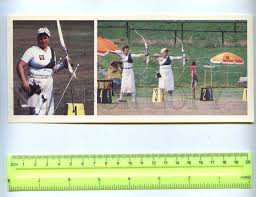 |
| World Archery | Untitled | 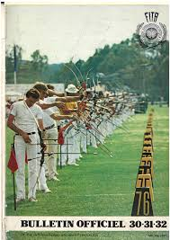 |
| Amazon.com | Amazon.com: Lehrbuch des Bogensports.: 9783878920502: Williams, John C.: Books | 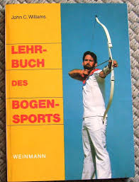 |
| PRO Select Project (@proselect.kamei) • Facebook | 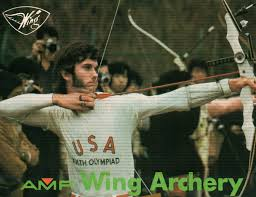 | |
| Leatherworker.net | Archery Arm Guard - Pattern & Instructions (*pdf File) - Page 3 - Leatherwork Conversation - Leatherworker.net | 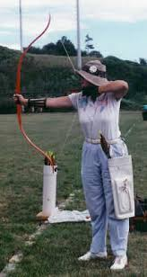 |
| The Wall Street Journal | Billionaire Helps An Indian Archer Aim for Olympics - WSJ | 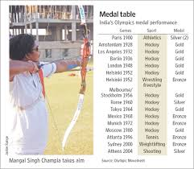 |
| eBay | 1996 Upper Deck Olympicard - Pick / Choose Your Cards | eBay | 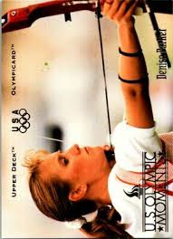 |
| australiansportsmuseum.org.au | Search Results - Australian Sports Museum | 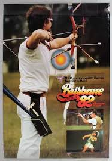 |
| X | Focus, believe in yourself and shoot only one arrow at a time.” - Doreen Wilber, Olympic Champion 1972 Wilber was the USA's first female Olympic champion in #archery, who set many international | 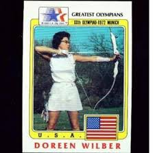 |
| hairworkspa.com | Graham Winston Archery Company The September Awards And Competitions - Archery Somerset | Bowmen Of Australia Graham Winston Archery Products | 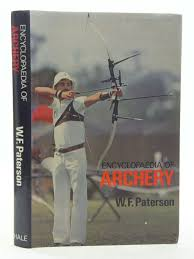 |
| eBay | 1977-80 Sportscaster Series 8 (UK) - Archery - #08-20 | eBay | 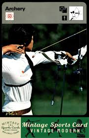 |
| HipStamp | Tuvalu-Nukufetau1988 Olympic Games-Seoul'88 MNH Sheet Very Fine | Australia & Oceania - Tuvalu, Stamp / HipStamp | 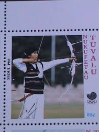 |
| eBay | Original 1976 Montreal Olympic Poster Archery Gymnastics *Must Read Description | eBay | 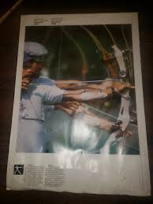 |
| Delcampe | Archery - SPORT CARD No 106 - ZORAN MATKOVIĆ, 1981., Yugoslavia, 10 x 15 cm | 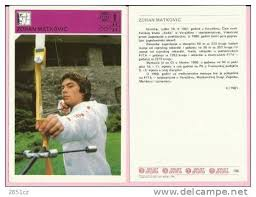 |
| eBay | 1992 Impel U.S. Olympicards - Norman Bellingham #29 for sale online | eBay | 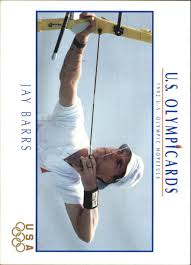 |
| YouTube | YouTube | 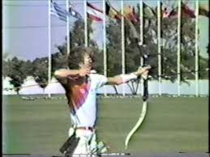 |
| YouTube | 1982 Commonwealth Games - Archery - YouTube | 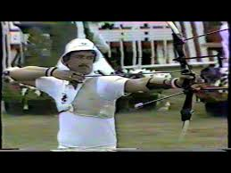 |
| eBay | 1977-79 Sportscaster Card, #08.20 Archery | eBay | 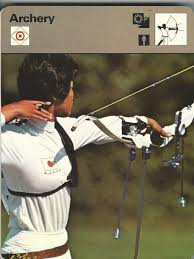 |
| AbeBooks | Encyclopedia of Archery - Paterson, W. F.: 9780312245856 - AbeBooks | |
| Alamy | Lynne evans hi-res stock photography and images - Alamy | |
| Alamy | Luann ryon hi-res stock photography and images - Alamy | |
| 1992 Barcelona Olympics Opening Ceremony | ||
| Alamy | Archer archery arrow black hi-res stock photography and images - Page 3 - Alamy | |
| eBay | Encyclopaedia of Archery By W F Paterson - (HARDCOVER, 1984) VERY GOOD+ 9780709010722| eBay | |
| eBay | 1992 Impel U.S. Olympic Hopefuls #1 Jay Barrs Team USA | eBay | |
| eBay | Coca Cola Coke chrome postcard Olympics Advertising Barcelona Spain 1992 | eBay | |
| eBay | 1992 Impel U.S. Olympic Trading Card Pick one | eBay | |
| Alamy | September 1972: Munich Olympics: John Akii Bua of Uganda leads Britain's David Hemery in the 400m hurdles final Stock Photo - Alamy | |
| Canadian Journal of Hospital Pharmacy (CJHP) | Untitled |